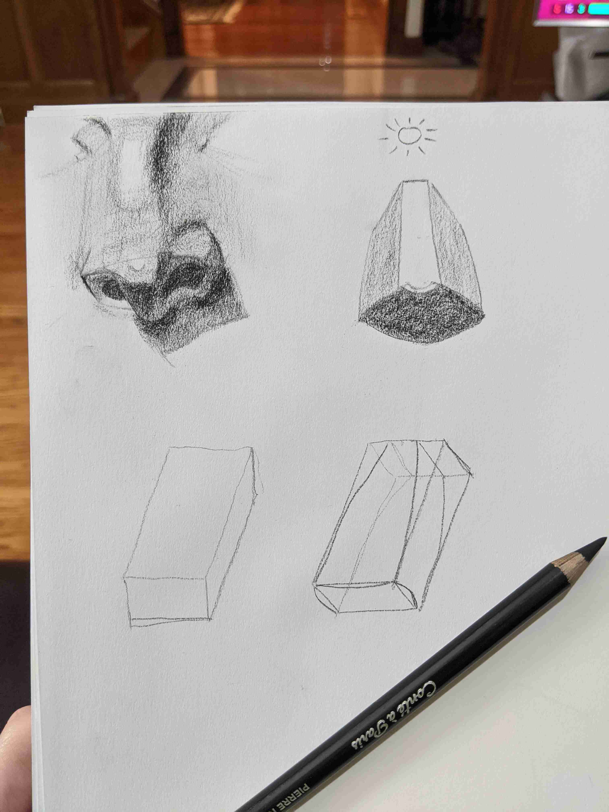

Drawing Practice 2019-12-15
Today I followed along with a drawing of a nose. I want to practice nose anatomy more, but I think it went pretty well for a first attempt. It was also the most effort I've put into the rendering step of a drawing, which was really gratifying to watch as it took shape.

Materials Used: medium-weight sketchbook and Conte HB (I want to try the atelier method of sharpening, but I'll do that later. still a bit nervous about breaking the pencil when I try :P )